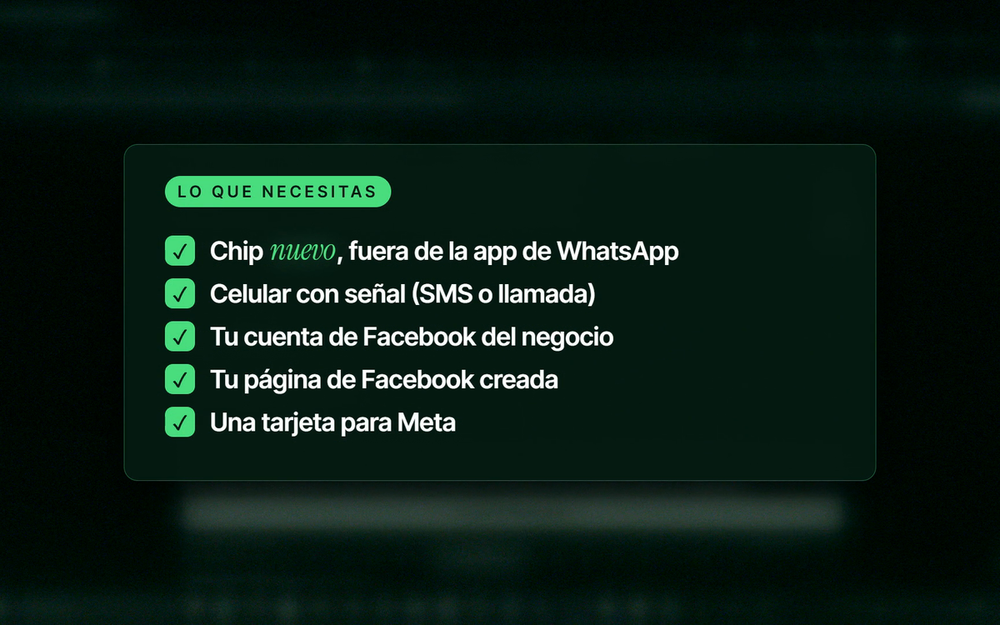
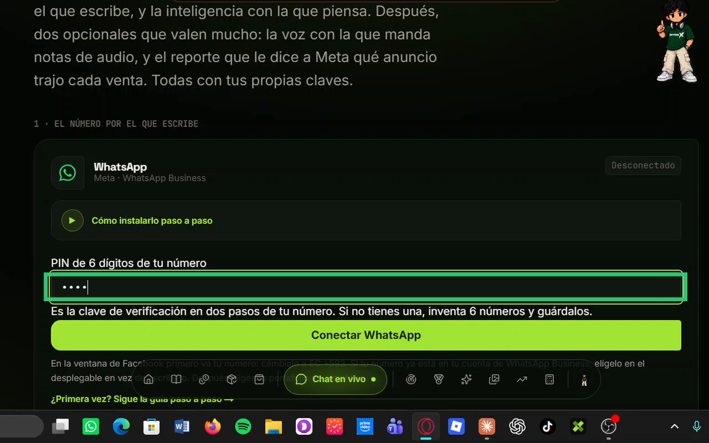
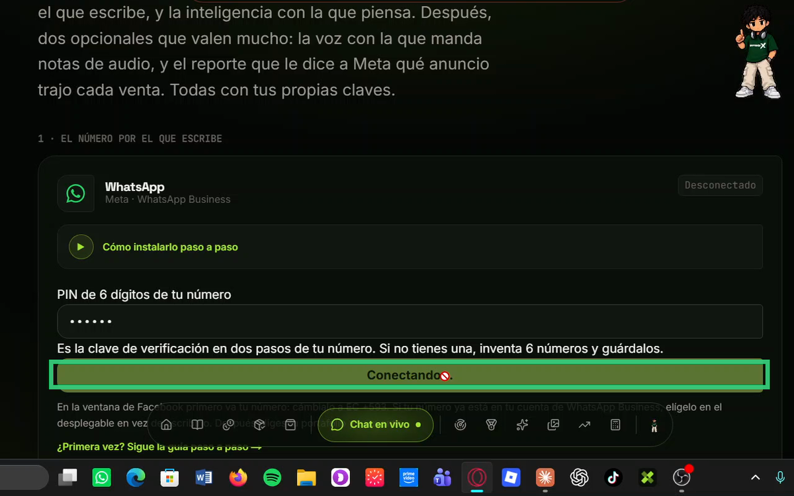
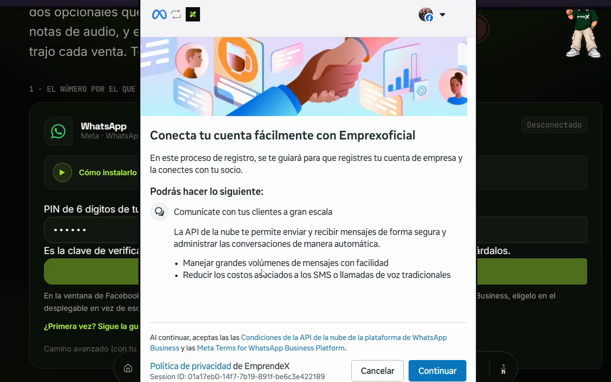
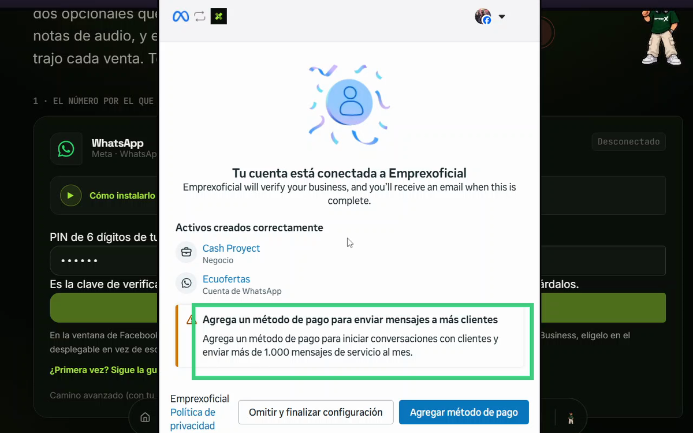
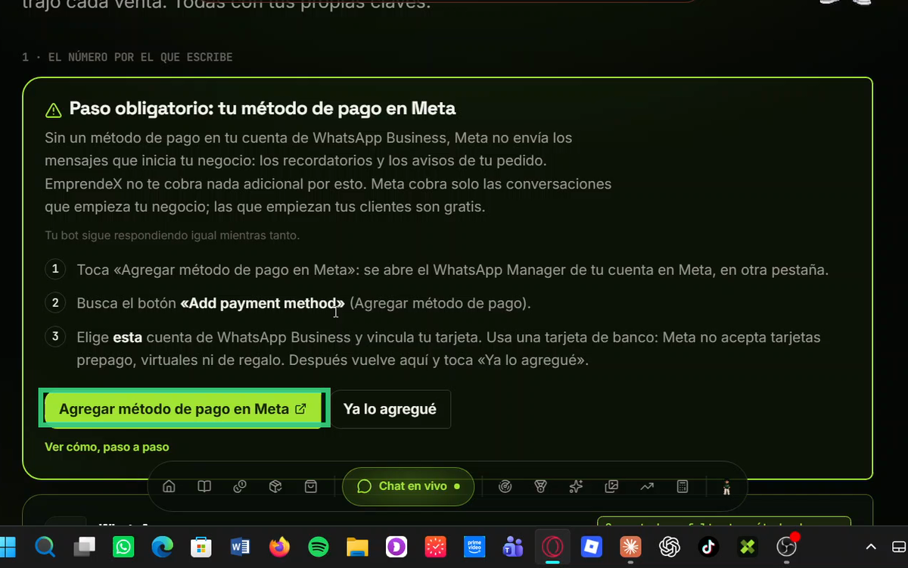
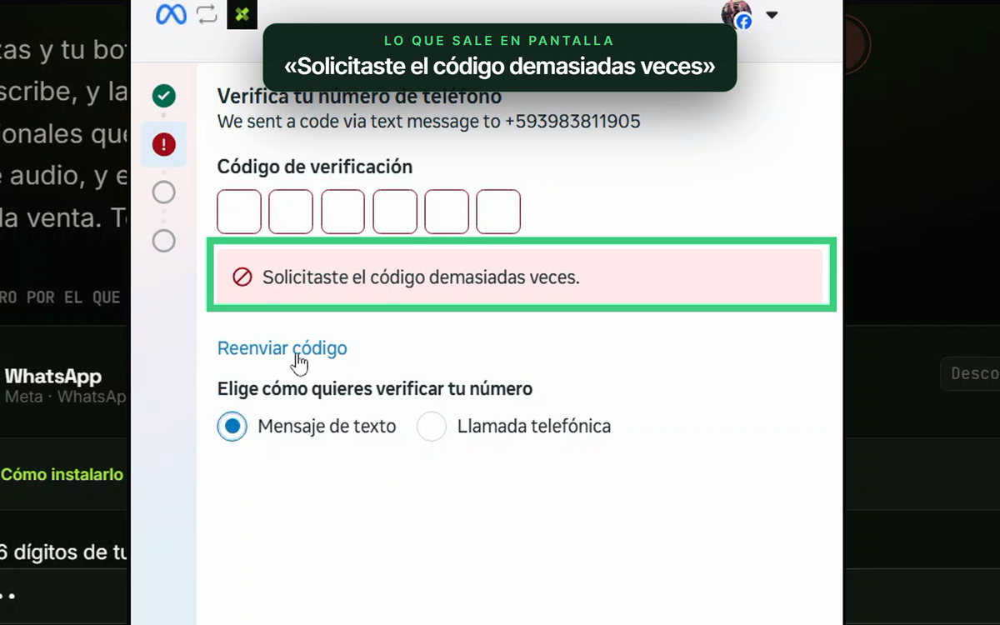

Conecta tu WhatsApp a EmprendeX
Mira el video y sigue los pasos en orden. Sin crear una app en Meta y sin pegar datos técnicos: solo tu número, el código que te llega y tu tarjeta para Meta.
Ir a conectar en EmprendeXSi algo te sale raro, toca el botón «¿Necesitas ayuda?» de abajo a la derecha: Pablo te responde al instante y puedes mandarle la captura del aviso.
Video 1 · 5 minutos
Cómo conectar WhatsApp, paso a paso
Antes de empezar
Ten esto listo
- Un chip móvil con SIM activa, tuyo, que reciba SMS o llamadas. Evita números virtuales o fijos: muchos no reciben el código.
- Que ese número NO esté en la app de WhatsApp. Si lo está, elimina la cuenta en la app y espera unos 3 minutos (se pierden los chats).
- Tu cuenta personal de Facebook, con historial (no recién creada), que sea administradora del negocio y con la verificación en dos pasos activada.
- Un portafolio comercial de Meta: lo creas en la ventana o eliges uno que ya tengas. Uno nuevo admite hasta 2 números; al verificar el negocio, hasta 20. Verificarlo no es obligatorio para empezar.
- El nombre visible de tu WhatsApp: el nombre real de tu negocio, sin «oficial», ofertas, .com ni las palabras WhatsApp, Facebook o Meta.
- Tu tarjeta Visa o Mastercard para el método de pago en Meta. Desde el 1 de octubre de 2026 los mensajes de servicio se cobran después de 1.000 gratis al mes por número; sin tarjeta, Meta deja de entregarlos.
- No necesitas una Página de Facebook para conectar WhatsApp; solo si luego haces anuncios de clic a WhatsApp.
- No pidas códigos seguidos: espera el temporizador (hasta 10 minutos) y usa la opción de llamada.
- Al poner tu número, cambia el prefijo US +1 por EC +593 y no pongas el 0 inicial.
- Nunca compartas tu contraseña ni tu código con nadie: ni con nosotros.
Los pasos · en EmprendeX: Cuenta › Conexiones › WhatsApp
Lo que necesitas
- Un chip nuevo solo para el bot. No puede estar en la app de WhatsApp de tu teléfono.
- Un celular que reciba SMS, para el código de verificación.
- La cuenta de Facebook que administra tu negocio.

Escribe tu PIN
Son 6 dígitos que tú inventas. Es la verificación en dos pasos de tu número. Guárdalo en un lugar seguro: lo vas a necesitar si algún día cambias de equipo.

Toca «Conectar WhatsApp»
Se abre la ventana de Facebook. No la cierres hasta terminar.

En la ventana de Facebook
Sigue la ventana en este orden: primero va tu número.
- Escribe tu número con EC +593, o elígelo del desplegable si ya está en tu cuenta de WhatsApp Business.
- Pon el código que te llega por SMS o llamada (solo si el número es nuevo).
- Elige o crea tu portafolio y tu cuenta de WhatsApp Business.
- Toca Finalizar.

Listo: ya conectado
La tarjeta dice «Conectado» y el bot contesta. Pruébalo escribiéndole desde otro teléfono.

Pon tu método de pago en Meta
Sin un método de pago en tu cuenta de WhatsApp Business, Meta no envía los mensajes que inicia tu negocio: los recordatorios y los avisos de tu pedido. EmprendeX no te cobra nada adicional por esto. Meta cobra solo las conversaciones que empieza tu negocio; las que empiezan tus clientes son gratis.

Lo más común y cómo arreglarlo
- No llega el código: pide que te lo manden por llamada.
- El número está en la app del teléfono: bórralo de la app de WhatsApp y espera unos minutos.
- «Cuenta restringida»: en el Centro de asistencia de Meta, pide una revisión (Solicitar revisión).

Video 2 · 7 minutos
Los 12 avisos de Meta y qué hacer con cada uno
Problemas típicos
¿Sigue sin funcionar?
Pregúntale a Pablo
Toca el botón «¿Necesitas ayuda?» de abajo a la derecha, escribe lo que te pasa o mándale la captura del aviso (hasta 3). Es gratis y responde con el manual de instalación. Dentro de la plataforma también está, en Cuenta › Conexiones › Instalar WhatsApp.
Enlaces que vas a necesitar: Administrador de WhatsApp · Centro de asistencia de Meta